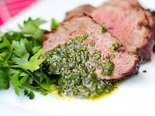

Description
A sauce made of fresh herbs that is great with grilled meat.
Ingredients
- 1 cup fresh parsley
- 5 medium cloves garlic
- 2 tablespoons fresh oregano
- 1/2 cup extra virgin olive oil
- 1/4 cup red wine vinegar
- 1 teaspoon kosher salt
- 1/4 teaspoon red pepper flakes
Directions
- In a food processor, add parsley, garlic, and oregano
- Pulse until finely chopped
- Transfer to a bowl and add oil, vinegar, salt, and red pepper flakes
- Whisk to combine thoroughly and store in the refrigerator for up to two days
Back to Main Menu